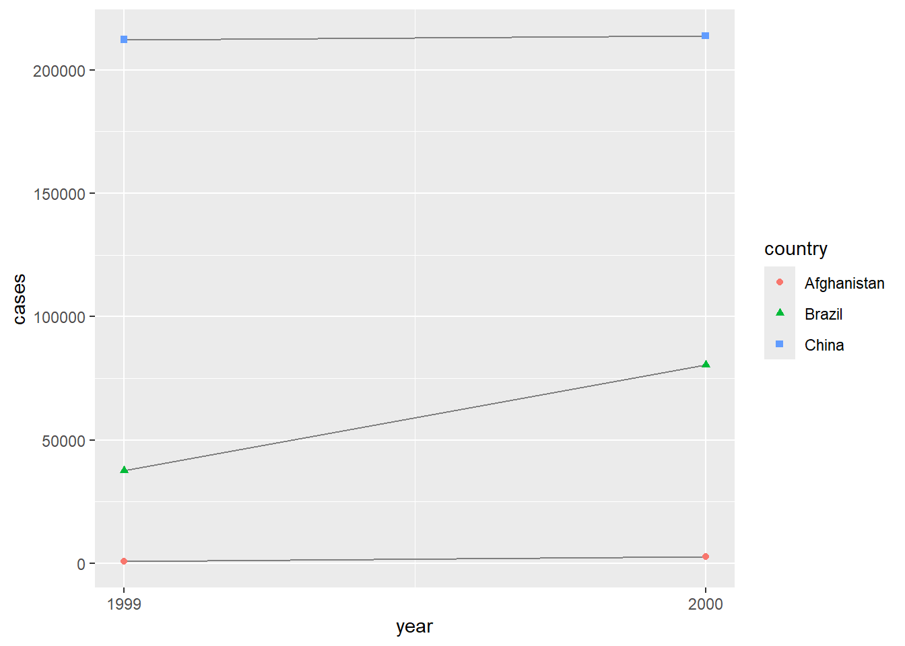
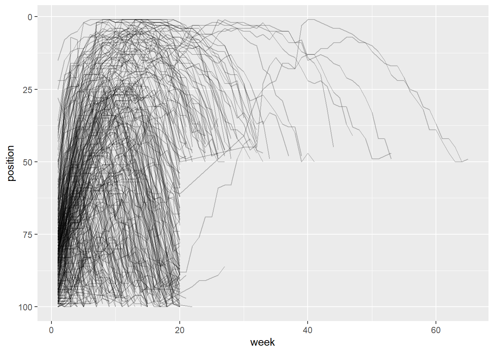

library(tidyverse)5 Data tidying
5.1 Introduction
5.1.1 Prerequisites
5.2 Tidy data
You can represent the same underlying data in multiple ways. Tidy data is easier to read and work with.
There are three interrelated rules that make a dataset tidy:
- Each variable is a column; each column is a variable.
- Each observation is a row; each row is an observation.
- Each value is a cell; each cell is a single value.
The tidyverse packages are designed to work with tidy data. Example:
table1# A tibble: 6 × 4
country year cases population
<chr> <dbl> <dbl> <dbl>
1 Afghanistan 1999 745 19987071
2 Afghanistan 2000 2666 20595360
3 Brazil 1999 37737 172006362
4 Brazil 2000 80488 174504898
5 China 1999 212258 1272915272
6 China 2000 213766 1280428583Compute the rate per 10,000:
table1 |>
mutate(rate = cases / population * 10000)# A tibble: 6 × 5
country year cases population rate
<chr> <dbl> <dbl> <dbl> <dbl>
1 Afghanistan 1999 745 19987071 0.373
2 Afghanistan 2000 2666 20595360 1.29
3 Brazil 1999 37737 172006362 2.19
4 Brazil 2000 80488 174504898 4.61
5 China 1999 212258 1272915272 1.67
6 China 2000 213766 1280428583 1.67 Total cases per year:
table1 |>
summarise(
total_cases = sum(cases),
.by = year
)# A tibble: 2 × 2
year total_cases
<dbl> <dbl>
1 1999 250740
2 2000 296920Visualize changes over time:
ggplot(table1, aes(x = year, y = cases)) +
geom_line(aes(group = country), color = "grey50") +
geom_point(aes(color = country, shape = country)) +
scale_x_continuous(breaks = c(1999, 2000)) # x-axis breaks at 1999 and 2000
5.2.1 Exercises
1. For each of the sample tables, describe what each observation and each column represents.
table1# A tibble: 6 × 4
country year cases population
<chr> <dbl> <dbl> <dbl>
1 Afghanistan 1999 745 19987071
2 Afghanistan 2000 2666 20595360
3 Brazil 1999 37737 172006362
4 Brazil 2000 80488 174504898
5 China 1999 212258 1272915272
6 China 2000 213766 1280428583table2# A tibble: 12 × 4
country year type count
<chr> <dbl> <chr> <dbl>
1 Afghanistan 1999 cases 745
2 Afghanistan 1999 population 19987071
3 Afghanistan 2000 cases 2666
4 Afghanistan 2000 population 20595360
5 Brazil 1999 cases 37737
6 Brazil 1999 population 172006362
7 Brazil 2000 cases 80488
8 Brazil 2000 population 174504898
9 China 1999 cases 212258
10 China 1999 population 1272915272
11 China 2000 cases 213766
12 China 2000 population 1280428583table3# A tibble: 6 × 3
country year rate
<chr> <dbl> <chr>
1 Afghanistan 1999 745/19987071
2 Afghanistan 2000 2666/20595360
3 Brazil 1999 37737/172006362
4 Brazil 2000 80488/174504898
5 China 1999 212258/1272915272
6 China 2000 213766/1280428583table1: each row represents a country in a particular year. Cases and population are stored in separate columns.table2: each row represents a country, year, and measurement type. Cases and population are stored in onecountcolumn, which makes this a longer format.table3: each row represents a country in a particular year. Cases and population are combined into a character column calledrate, which makes numerical calculations more difficult.
2. Sketch out the process you’d use to calculate the rate for table2 and table3. You will need to perform four operations:
- Extract the number of TB cases per country per year.
- Extract the matching population per country per year.
- Divide cases by population, and multiply by 10000.
- Store back in the appropriate place.
From ChatGPT:
For
table2, I would group the data by country and year, extract the count for cases and the count for population, divide cases by population, multiply by 10,000, and store the result in a newratecolumn. Fortable3, I would first separate theratecolumn into cases and population, convert both values into numbers, calculate cases divided by population times 10,000, and replace the original text with the numerical rate.
The code for table2:
table2 |>
pivot_wider(
names_from = type,
values_from = count
) |>
mutate(
rate = cases / population * 10000
)# A tibble: 6 × 5
country year cases population rate
<chr> <dbl> <dbl> <dbl> <dbl>
1 Afghanistan 1999 745 19987071 0.373
2 Afghanistan 2000 2666 20595360 1.29
3 Brazil 1999 37737 172006362 2.19
4 Brazil 2000 80488 174504898 4.61
5 China 1999 212258 1272915272 1.67
6 China 2000 213766 1280428583 1.67 5.3 Lengthening data
Pivoting transforms data into a tidy form: variables in columns and observations in rows.
The tidyr functions for this are:
pivot_longer()pivot_wider()
5.3.1 Data in column names
billboard# A tibble: 317 × 79
artist track date.entered wk1 wk2 wk3 wk4 wk5 wk6 wk7 wk8
<chr> <chr> <date> <dbl> <dbl> <dbl> <dbl> <dbl> <dbl> <dbl> <dbl>
1 2 Pac Baby… 2000-02-26 87 82 72 77 87 94 99 NA
2 2Ge+her The … 2000-09-02 91 87 92 NA NA NA NA NA
3 3 Doors D… Kryp… 2000-04-08 81 70 68 67 66 57 54 53
4 3 Doors D… Loser 2000-10-21 76 76 72 69 67 65 55 59
5 504 Boyz Wobb… 2000-04-15 57 34 25 17 17 31 36 49
6 98^0 Give… 2000-08-19 51 39 34 26 26 19 2 2
7 A*Teens Danc… 2000-07-08 97 97 96 95 100 NA NA NA
8 Aaliyah I Do… 2000-01-29 84 62 51 41 38 35 35 38
9 Aaliyah Try … 2000-03-18 59 53 38 28 21 18 16 14
10 Adams, Yo… Open… 2000-08-26 76 76 74 69 68 67 61 58
# ℹ 307 more rows
# ℹ 68 more variables: wk9 <dbl>, wk10 <dbl>, wk11 <dbl>, wk12 <dbl>,
# wk13 <dbl>, wk14 <dbl>, wk15 <dbl>, wk16 <dbl>, wk17 <dbl>, wk18 <dbl>,
# wk19 <dbl>, wk20 <dbl>, wk21 <dbl>, wk22 <dbl>, wk23 <dbl>, wk24 <dbl>,
# wk25 <dbl>, wk26 <dbl>, wk27 <dbl>, wk28 <dbl>, wk29 <dbl>, wk30 <dbl>,
# wk31 <dbl>, wk32 <dbl>, wk33 <dbl>, wk34 <dbl>, wk35 <dbl>, wk36 <dbl>,
# wk37 <dbl>, wk38 <dbl>, wk39 <dbl>, wk40 <dbl>, wk41 <dbl>, wk42 <dbl>, …In the Billboard data, each row initially represents one song. The weekly rankings are spread across the columns wk1 to wk76. The column names contain the week variable, while the cell values contain the rank variable. pivot_longer() converts these weekly columns into rows, so that each row represents one song’s rank in one week.
billboard |>
pivot_longer(
cols = starts_with("wk"),
names_to = "week",
values_to = "position"
)# A tibble: 24,092 × 5
artist track date.entered week position
<chr> <chr> <date> <chr> <dbl>
1 2 Pac Baby Don't Cry (Keep... 2000-02-26 wk1 87
2 2 Pac Baby Don't Cry (Keep... 2000-02-26 wk2 82
3 2 Pac Baby Don't Cry (Keep... 2000-02-26 wk3 72
4 2 Pac Baby Don't Cry (Keep... 2000-02-26 wk4 77
5 2 Pac Baby Don't Cry (Keep... 2000-02-26 wk5 87
6 2 Pac Baby Don't Cry (Keep... 2000-02-26 wk6 94
7 2 Pac Baby Don't Cry (Keep... 2000-02-26 wk7 99
8 2 Pac Baby Don't Cry (Keep... 2000-02-26 wk8 NA
9 2 Pac Baby Don't Cry (Keep... 2000-02-26 wk9 NA
10 2 Pac Baby Don't Cry (Keep... 2000-02-26 wk10 NA
# ℹ 24,082 more rowsOr a different way of selecting the columns:
billboard |>
pivot_longer(
cols = !c(artist, track, date.entered),
names_to = "week",
values_to = "rank"
)# A tibble: 24,092 × 5
artist track date.entered week rank
<chr> <chr> <date> <chr> <dbl>
1 2 Pac Baby Don't Cry (Keep... 2000-02-26 wk1 87
2 2 Pac Baby Don't Cry (Keep... 2000-02-26 wk2 82
3 2 Pac Baby Don't Cry (Keep... 2000-02-26 wk3 72
4 2 Pac Baby Don't Cry (Keep... 2000-02-26 wk4 77
5 2 Pac Baby Don't Cry (Keep... 2000-02-26 wk5 87
6 2 Pac Baby Don't Cry (Keep... 2000-02-26 wk6 94
7 2 Pac Baby Don't Cry (Keep... 2000-02-26 wk7 99
8 2 Pac Baby Don't Cry (Keep... 2000-02-26 wk8 NA
9 2 Pac Baby Don't Cry (Keep... 2000-02-26 wk9 NA
10 2 Pac Baby Don't Cry (Keep... 2000-02-26 wk10 NA
# ℹ 24,082 more rowspivot_longer() converts the columns beginning with wk into rows. The old column names are stored in a new week column, while the ranking values are stored in a new rank column.
colsidentifies the columns to pivot.names_togives a name to the new column containing the old column names.values_togives a name to the new column containing the old cell values.
Structural missing values occur because of how the data is organized, rather than because an expected value is unknown. In the Billboard data, NA means a song was not in the Top 100 during that week. values_drop_na = TRUE removes these unnecessary NA rows when using pivot_longer().
billboard |>
pivot_longer(
cols = starts_with("wk"),
values_to = "position",
names_to = "week",
values_drop_na = TRUE
)# A tibble: 5,307 × 5
artist track date.entered week position
<chr> <chr> <date> <chr> <dbl>
1 2 Pac Baby Don't Cry (Keep... 2000-02-26 wk1 87
2 2 Pac Baby Don't Cry (Keep... 2000-02-26 wk2 82
3 2 Pac Baby Don't Cry (Keep... 2000-02-26 wk3 72
4 2 Pac Baby Don't Cry (Keep... 2000-02-26 wk4 77
5 2 Pac Baby Don't Cry (Keep... 2000-02-26 wk5 87
6 2 Pac Baby Don't Cry (Keep... 2000-02-26 wk6 94
7 2 Pac Baby Don't Cry (Keep... 2000-02-26 wk7 99
8 2Ge+her The Hardest Part Of ... 2000-09-02 wk1 91
9 2Ge+her The Hardest Part Of ... 2000-09-02 wk2 87
10 2Ge+her The Hardest Part Of ... 2000-09-02 wk3 92
# ℹ 5,297 more rowsTo make computation easier, we can convert the values of week from character strings to numbers, using mutate() and readr::parse_number():
billboard_longer <- billboard |>
pivot_longer(
cols = starts_with("wk"),
names_to = "week",
values_to = "position",
values_drop_na = TRUE
) |>
mutate(week = parse_number(week))
billboard_longer# A tibble: 5,307 × 5
artist track date.entered week position
<chr> <chr> <date> <dbl> <dbl>
1 2 Pac Baby Don't Cry (Keep... 2000-02-26 1 87
2 2 Pac Baby Don't Cry (Keep... 2000-02-26 2 82
3 2 Pac Baby Don't Cry (Keep... 2000-02-26 3 72
4 2 Pac Baby Don't Cry (Keep... 2000-02-26 4 77
5 2 Pac Baby Don't Cry (Keep... 2000-02-26 5 87
6 2 Pac Baby Don't Cry (Keep... 2000-02-26 6 94
7 2 Pac Baby Don't Cry (Keep... 2000-02-26 7 99
8 2Ge+her The Hardest Part Of ... 2000-09-02 1 91
9 2Ge+her The Hardest Part Of ... 2000-09-02 2 87
10 2Ge+her The Hardest Part Of ... 2000-09-02 3 92
# ℹ 5,297 more rowspivot_longer() initially creates week as character values such as “wk1” and “wk2”. mutate() with parse_number() extracts the numbers and converts week to a numeric variable, making future calculations easier.
We can now visualize how song ranks vary over time:
billboard_longer |>
ggplot(aes(week, position, group = track)) +
geom_line(alpha = 0.25) +
scale_y_reverse()
5.3.2 How does pivoting work?
Suppose we have 3 patients, each with 2 blood pressure readings:
df <- tribble(
~id, ~bp1, ~bp2,
"A", 100, 120,
"B", 140, 115,
"C", 120, 125
)We want our new dataset to have three variables: id (which already exists), measurement (the column names), and value (the cell values). To achieve this, we pivot df longer:
df |>
pivot_longer(
cols = bp1:bp2,
names_to = "measurement",
values_to = "value"
)# A tibble: 6 × 3
id measurement value
<chr> <chr> <dbl>
1 A bp1 100
2 A bp2 120
3 B bp1 140
4 B bp2 115
5 C bp1 120
6 C bp2 125